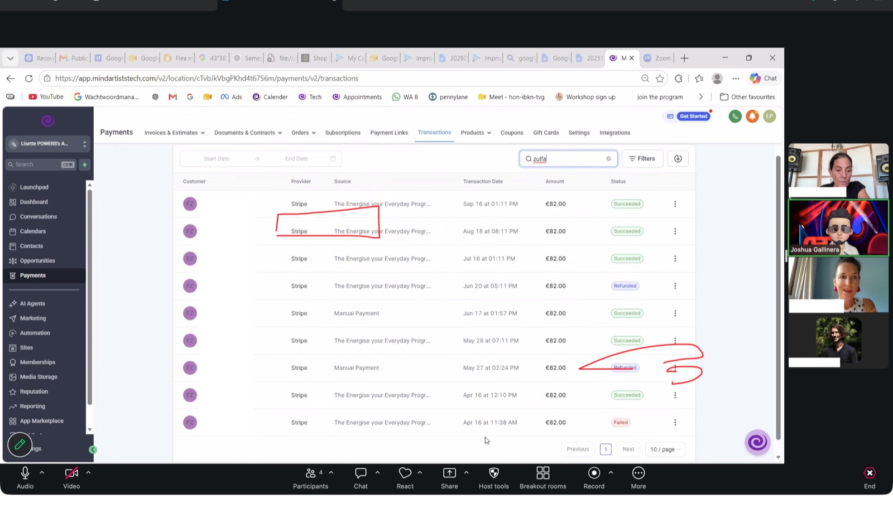
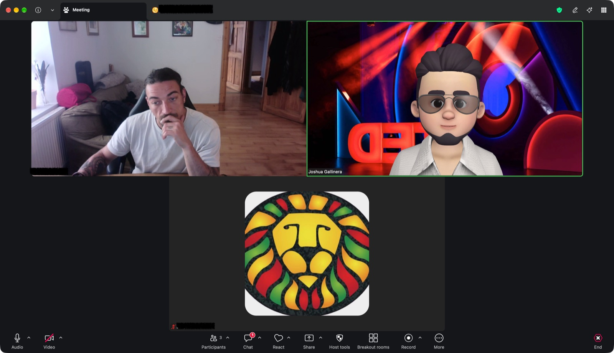
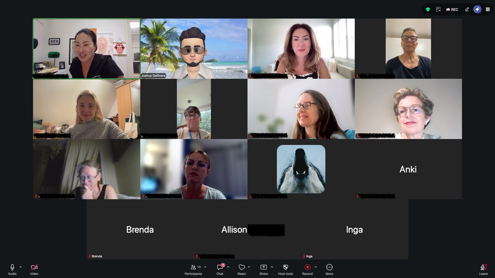
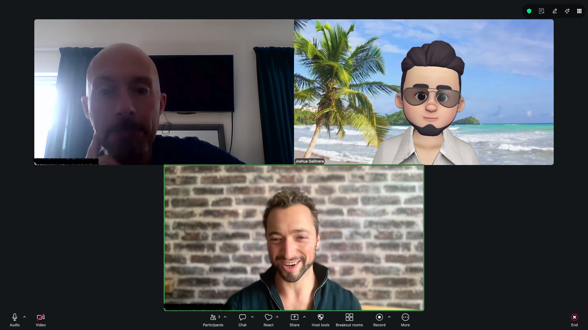

I run live group sessions where I teach people how to use GoHighLevel properly and troubleshoot what's actually broken in their accounts — payments, workflows, automations, pipelines and the integrations that quietly fail between them.
These aren't recorded courses. People bring their live accounts, something is usually on fire, and we fix it together while everyone watches.
Two formats, same principle: nobody should be stuck alone with a platform that refuses to explain itself.
Teaching sessions cover the mechanics — how workflows actually route, how to read the numbers your platform reports, how to build automations that don't break at 2am. I teach the reasoning, not just the clicks, so people can build their own things afterwards instead of waiting for me.
Support sessions are live troubleshooting. Attendees bring whatever is failing — a payment that won't process, a workflow that stopped firing, a form that isn't capturing leads — and we diagnose it together on screen.
Both formats are interactive by design. The most useful moment in most sessions is somebody else saying "wait, I have that problem too" — because then the fix is proven, not just explained.
A group troubleshooting session focused on the Payments module — the part of GHL that most often goes wrong quietly. We walked through a live transaction ledger and worked out why specific payments had succeeded, failed, or been refunded, and what each state means for reconciliation.

Most small business owners can read an ads dashboard, but not interpret it — so they end up making decisions on numbers they don't understand. This session walks the group through how to actually read ad performance data and, more importantly, what to change based on what the data is telling them.

A dedicated session for health coaches building their first automation stack. We walk the group through the full pipeline — from the webinar where someone first opts in, through every automated step that follows, to a payment that goes through without anyone manually touching it.

An open-format session where attendees bring whatever is misbehaving in their accounts and we work through it together. The fix matters, but so does the diagnosis being visible — people watch the reasoning, learn the method, and can repeat it themselves the next time something breaks.

Transaction ledgers, failed payments, refunds, product and order handling, and reconciling what actually cleared.
Trigger logic, branching conditions, routing rules, and building automations that are still maintainable a year later.
Pipeline structure that matches how a business actually sells, opportunity stages, and reporting that reflects reality.
Reading Ads Manager stats properly, spotting a real problem versus normal variance, and deciding what to change next.
Zapier and Make boundaries, Facebook Leads, third-party APIs, and debugging where data stops arriving.
Conversational AI setup, intent routing, prompt limits, and when a human handoff is the correct answer.
Webinar registration and reminder sequences, connecting Stripe for automatic payments, domains, and WhatsApp templates.
SOPs and process documentation so internal teams can run their own systems without calling for help.
I run private group sessions for agencies, SMBs and internal teams — teaching sessions on a topic you choose, or a troubleshooting clinic where your people bring what's actually broken. Every attendee gets the recording and a written SOP afterward.